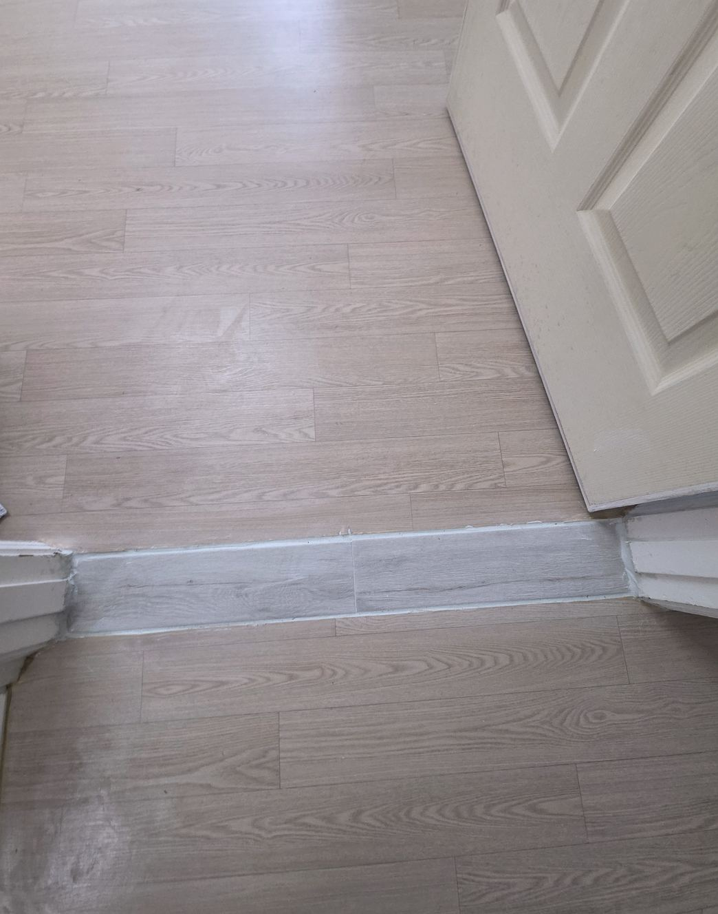
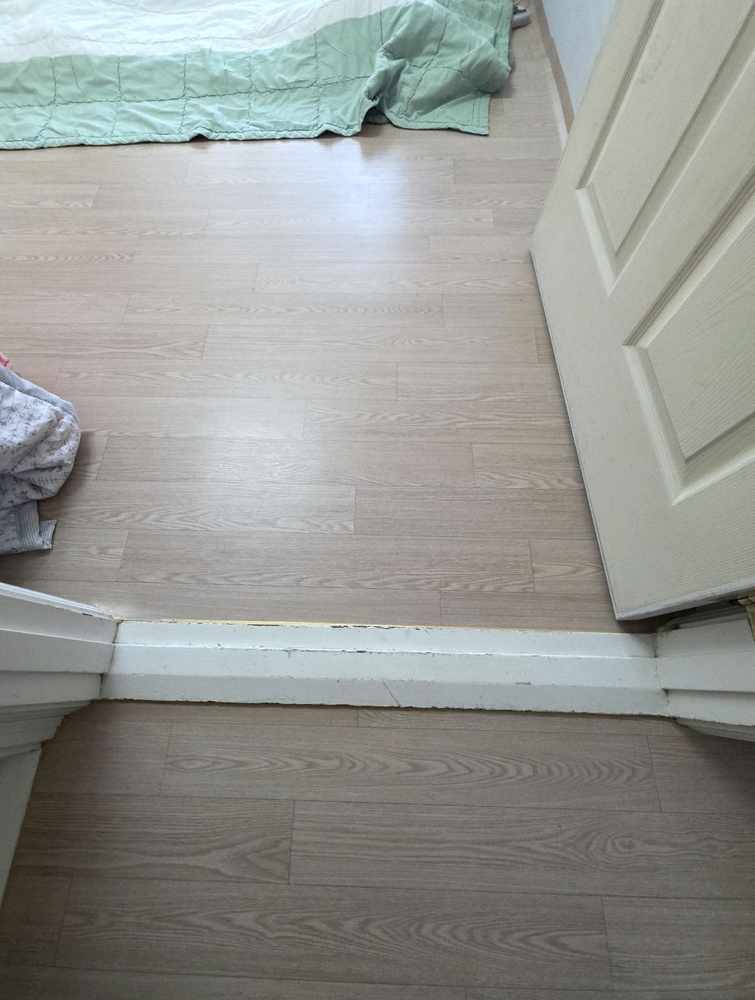
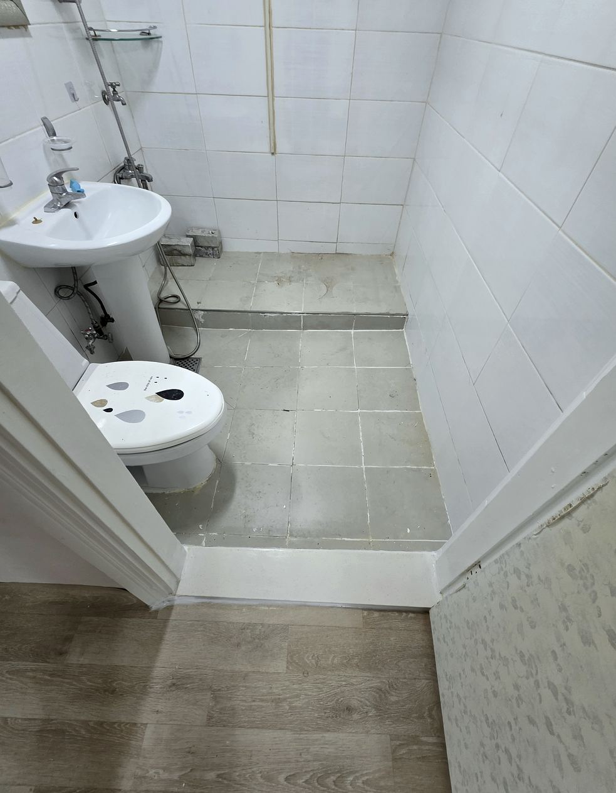

고양문턱수리
걸리고 부서진 문턱, 그날 정리합니다
고양문턱수리를 찾고 계신다면 문턱이 어느 단계까지 상했는지부터 봐야 합니다. 고양 일산은 1기 신도시라 대부분 30년 차입니다. 이 연식이면 문턱이 변색되고 모서리가 깨진 세대가 단지 단위로 나오고, 리모델링하면서 문턱만 옛것으로 남은 집도 많습니다. 화정·행신 쪽도 비슷한 시기 입주라 증상이 같습니다. 아래 사진은 실제 시공 현장입니다. 시공 전 사진은 휠체어 통행에 걸리던 문턱이 남아 있던 상태이고, 시공 후 사진은 문턱을 철거하고 바닥을 평탄하게 마감한 상태입니다. 부서지거나 들뜬 문턱은 접착제로 눌러 붙여도 오래가지 않습니다. 바탕 상태를 보고 교체가 맞는지, 단차를 낮추는 게 맞는지, 아예 철거하고 평탄하게 마감하는 게 맞는지 현장에서 판단해 드립니다. 고양문턱수리는 걷어낸 뒤 바탕을 어떻게 잡느냐에서 결과가 갈립니다. 고양 지역은 사진 확인 후 빠르게 방문 일정을 잡아드리며, 문턱 사진을 문자로 보내주시면 방문 전에 방식과 금액대를 먼저 안내드립니다. 고양문턱수리 문의는 사진 한 장이면 시작됩니다.
고양 시공 전과 후
실제 현장 사진입니다. 비슷한 상태라면 참고해 보세요.

휠체어 통행에 걸리던 문턱이 남아 있던 상태

문턱을 철거하고 바닥을 평탄하게 마감한 상태
고양에서 많이 들어오는 문의
일산 30년 차 문턱 변색·깨짐
같은 시기 입주라 옆집도 같은 상태인 경우가 많습니다. 여러 곳 동시 시공 시 유리합니다.
리모델링 후 남은 옛 문턱
새 바닥과 옛 문턱 사이 색과 높이가 어긋난 집. 문턱만 바꿔 마무리합니다.
높은 문턱 단차 낮춤
30년 전 규격은 지금보다 문턱이 높습니다. 낮춰서 걸림을 줄입니다.
고양 시공 사례
고양 및 인근에서 진행한 작업입니다.
30년 만의 첫 교체
새 바닥 톤에 맞춤

보행 안전 확보
사진 한 장에서 시작합니다
- 문턱 전체와 상한 부분이 나오게 사진 2~3장 전송
- 교체·단차 낮춤·철거 중 맞는 방식과 금액대 안내
- 고양 방문 시공
- 잔재 수거·청소까지 마치고 마무리 확인
고양 문의 전 확인
고양도 출장 오시나요?
네. 고양 전 지역 방문합니다. 문턱 사진을 먼저 보내주시면 방문 전에 방식과 금액대를 알려드립니다.
문턱을 아예 없앨 수도 있나요?
구조상 가능한 집이 많습니다. 휠체어·유모차 통행이나 어르신 보행 때문에 철거를 원하시면 철거 후 바닥을 평탄하게 마감해 드립니다. 다만 욕실처럼 물을 쓰는 곳은 턱을 없애면 물이 넘칠 수 있어 현장을 보고 판단해 드립니다.
시공 시간은 얼마나 걸리나요?
문턱 한 곳 교체는 2~3시간, 철거 후 평탄 마감은 반나절 정도 봅니다. 여러 곳을 같이 하면 곳당 시간이 줄어듭니다.
먼지가 많이 나나요?
철거 과정에서 먼지가 납니다. 비닐로 주변을 막고 작업하며, 끝나고 청소까지 하고 나갑니다. 잔재도 전부 수거해 갑니다.